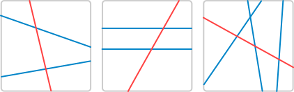
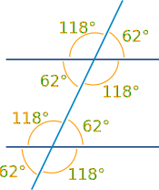

Transversals
A Transversal is a line that crosses at least two other lines.
The red line is the transversal in each example:
|  |
||
|
Transversal crossing two lines
|
this Transversal crosses two parallel lines | ... and this one cuts across three lines |
Pairs of Angles

When parallel lines get crossed by a transversal many angles are the same, as in this example:
See Parallel Lines and Pairs of Angles to learn more.